内容要点
一支 12 分钟方圆脸骨相化妆跟练教程：博主「彩彩」延续「先画笔演示、再实操」的方式，从内外轮廓双色号底妆、平行四边形阴影定位、膏状修容与鼻影、眼部骨相轮廓与眉骨提亮，到液体提亮、颧骨斜打腮红、定妆、英气眉与饱满唇，完整演示一套靠明暗对比替代色彩叠加的立体妆容公式。
知识结构
眼尾-嘴角连线、眉峰垂直到发际线、嘴角垂直到下巴，把脸分为内外轮廓；外轮廓粉底色号比内轮廓暗，底妆就有自然折叠度。
骨相立体脸侧面是平行四边形阴影：平行分界线到脸侧、平行下颌线到颧骨，连接成平行四边形，中间留白。
膏状/液体修容更融肤自然；日常骨相妆沿鼻子本身阴影加深即可：山根画弧、鼻头 V 字形、向内晕染，小刷点戳避免下重手。
眼部同样是平行四边形阴影：山根向眼窝凹陷、眼尾与眉尾连接；眉骨一定要提亮，突出明暗对比让眉眼立体。
局部定妆后眼影先按后晕染；液体提亮额头/下巴/面中三角区、鼻梁竖提鼻头横提；颧骨斜打腮红修饰阔面感；定妆后膏状修容只是变淡不会被盖掉。
眉头顺山根向下压、刀锋眉笔逐根画、染眉膏统一颜色；唇线笔在原唇线外侧勾勒、细节刷向内晕染，画饱满更大气。
方圆脸骨相妆公式＝内亮外暗底妆＋平行四边形修容＋眉骨提亮＋颧骨斜打腮红。即使不叠加很多颜色，只靠轮廓的明暗对比也能化出高级气质的妆容。
00:00-01:28内外轮廓：底妆的第一步
00:00博主「彩彩」开场说明了目标受众：五官圆钝的肉肉脸、化完妆依旧扁平不立体的姐妹。她延续上次「跟练教程」的风格，继续采用「先用画笔演示、再实操」的方式。
00:26第一步是找到脸的内外轮廓：眼尾与嘴角连线、眉峰垂直向上画到发际线、嘴角垂直向下到下巴，把这几点连接起来，就把脸分成了内轮廓和外轮廓。
00:49涂粉底液时，外轮廓的色号要比内轮廓暗一些——底妆阶段就让脸部出现自然的折叠度和清晰轮廓感。
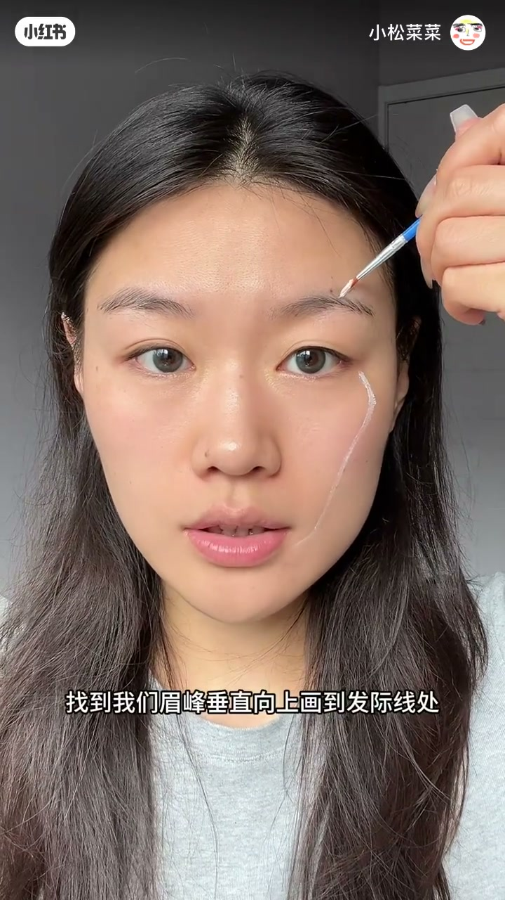
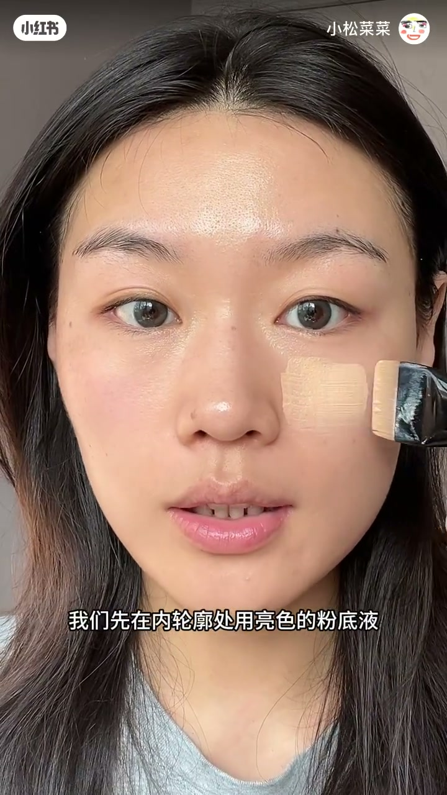
01:16实操时先用粉扑垂直拍开，先拍内轮廓再拍外轮廓，可以看到脸部出现自然的转折阴影。
01:28-02:28平行四边形阴影：立体脸型的定位
01:28基础做好后，进入细节塑造。博主强调一个核心认知：很多骨相立体的脸型，侧面都是「平行四边形的阴影」，这样显得脸部更加紧致立体。
01:39方圆脸的定位方法：从内外轮廓分界线开始，把眼尾-嘴角这条斜线平行移到脸侧发际线位置画一笔，再顺下颌角平行到颧骨位置画一条线，连接起来就是一个平行四边形阴影，中间留白。
02:13另外，骨相立体的脸型从额头分界线开始向后也有一个折叠度，所以分界线向后也要用阴影加深——红色标注的就是要画阴影的位置，可以截图保存。
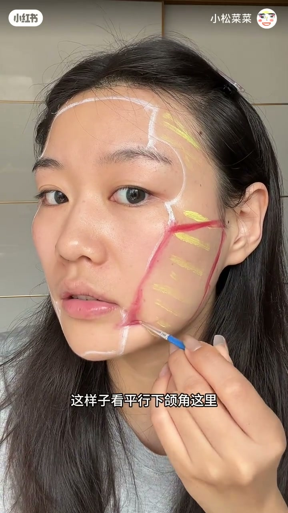
02:28-03:56膏状修容与鼻影实操
02:28实操阶段，博主推荐用膏状或液体的修容，比粉状更融肤自然：平行于分界线拍打到脸侧、平行下颌线到颧骨，额头两侧不要忘记垂直往后拍。
02:49日常骨相妆不需要刻意画「笔形鼻影」，沿着鼻子本身的阴影加深即可：山根起笔画弧线、鼻头画 V 字形、余粉晕染到鼻梁、向内晕染。想让鼻头更翘可以在鼻头位置横画一笔。
03:12实操细节：用小刷子蘸阴影，先涂在手上再一点点蘸，不容易下重手；上脸用点戳的方式避免把粉底带掉，更自然。
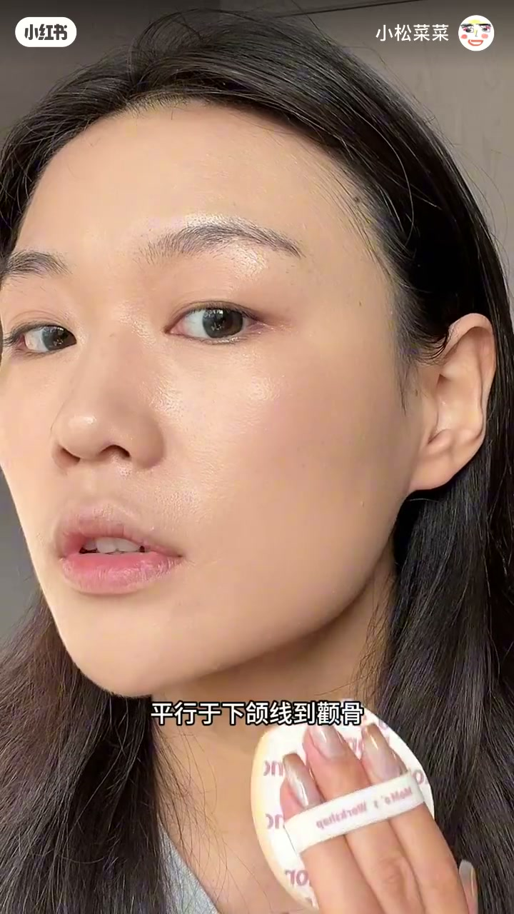
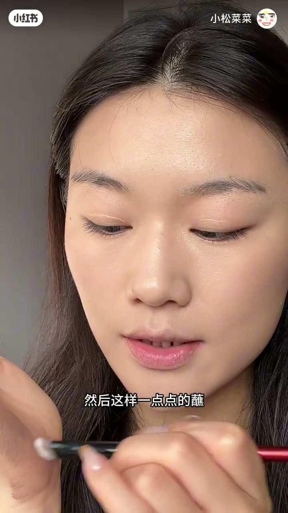
03:56-05:15眼部骨相轮廓
03:56眼部轮廓与脸侧一样，是一个平行四边形的阴影：从山根向眼窝凹陷处画阴影，眼尾凹陷处与眉尾连接。
04:17一个关键重点：眉骨处一定要提亮，突出明暗对比，眉眼轮廓更立体。
04:38骨相轮廓画好后，用深色眼影加深上下睫毛根部，再用刷子上一点余粉，眯起眼睛加深卧蚕。
04:53实操：小刷子从深高线起笔画阴影，慢慢往眼窝方向带；眼尾阴影往上连接到眉尾；画好后用小粉扑原地拍开提亮眉骨。
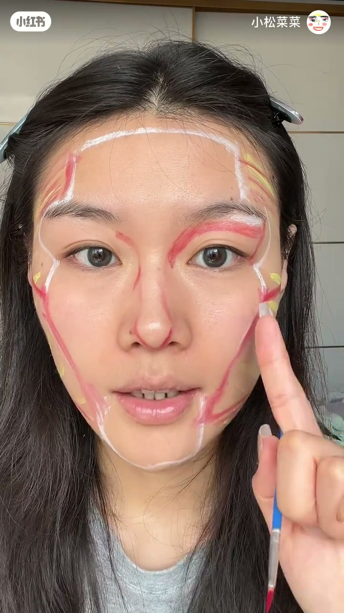
05:15-06:05局部定妆与眼影晕染
05:15眼部骨相轮廓画好后，先用散粉局部定妆，再上眼影。
05:23用深棕色眼影加深睫毛根部：上眼前先揉粉，贴着睫毛根部按上去，再慢慢向上晕染。博主特别提醒：千万不要上来就直接扫——因为下面还没定妆，会把眼影粉扫到未定妆的脸颊上。
05:51卧蚕用余粉淡淡带过即可。眼妆部分博主贴了上假睫毛、下睫毛用刷的，会贴就贴、不会贴直接刷也可以。
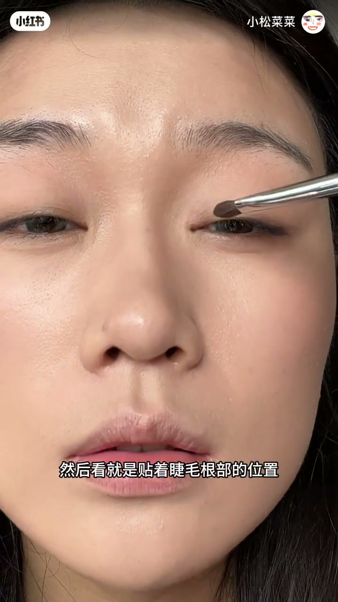
06:05-08:00液体提亮与斜打腮红
06:05骨相部分完成后叠加提亮和色彩。先用液体提亮涂在内轮廓的额头、下巴、面中三角区；鼻头横向提亮、鼻梁竖线提亮，眼角用细节刷提亮。
06:26腮红依旧采用颧骨斜打的方式：找到颧骨凸起位置，与眼尾阴影平行方向斜打。好处是脸部本来是横向的宽，斜打能修饰阔面感。
07:07提亮颜色也要根据肤色选择：黄皮用暖调提亮，白皮用冷调提亮。有鼻基底凹陷或法令纹的，提亮后用细节刷填补沟壑凹陷。
07:37腮红可选液体或膏状，选择低饱和颜色，用小粉扑蘸取后在颧骨斜向上点拍，额头和眼皮带一点统一色系。
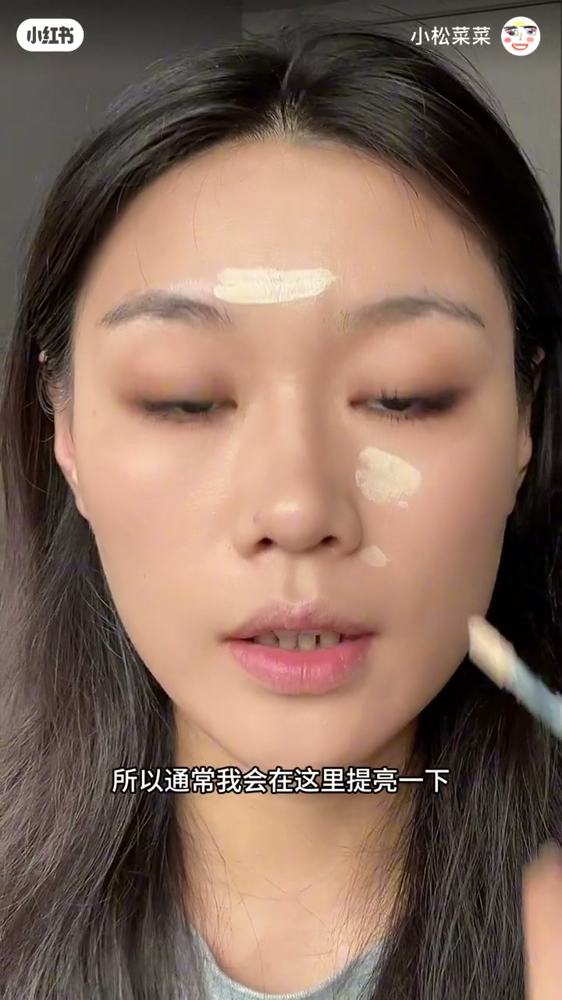
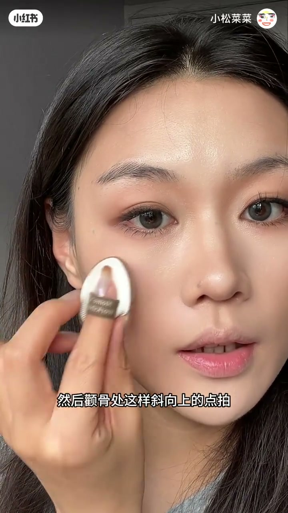
08:00-08:40定妆：膏状修容不会被盖掉
08:00整体完成后开始定妆，用按压的方式。如果修容和腮红都用膏状的，画的时候可以稍微重一点——因为定妆时会盖掉一点颜色，但不是完全盖掉。
08:19博主直接展示定妆后的脸：腮红依然在、鼻影阴影也依旧在，只是颜色稍微变淡。这回应了评论区「膏状修容定妆后会不会被盖掉」的疑问。
08:40-10:04英气眉：眉头下压
08:40骨相妆容的眉毛画得更英气一些更协调：在眉头位置顺着山根方向把眉头向下压，顺着毛流一根一根画。
09:04因为眉笔颜色与眉毛颜色始终不能统一，画完眉毛后用染眉膏统一颜色。
09:14实操：画英气感眉毛用刀锋状眉笔更容易画出毛流感；眉头下压、逐根补齐空缺；眉笔是棕色而本身眉毛是黑色时，用一次性眉刷蘸染眉膏往上梳，不容易糊成一团，刷眉头时往上梳更有野生感和立体感。
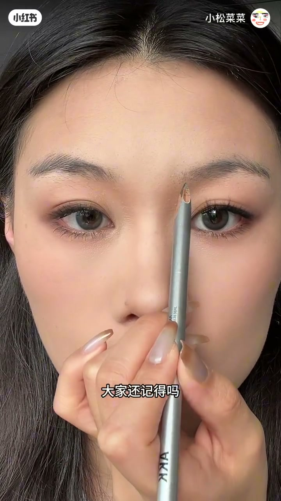
10:04-11:42唇部：画饱满显大气
10:04嘴唇往饱满了画会让整个妆容更大气：先用唇线笔在原本唇线的外侧勾勒轮廓（上嘴唇一样往外一点），再用小刷子往里晕染自然，不要一直往外扣，否则会化成「大嘴巴」。
10:50唇色选裸色系。实操：选裸粉色唇线笔接近原本唇色，勾勒饱满唇形，细节刷晕染自然；再用裸色调唇釉涂在嘴巴上，显得饱满又不会用力过猛。
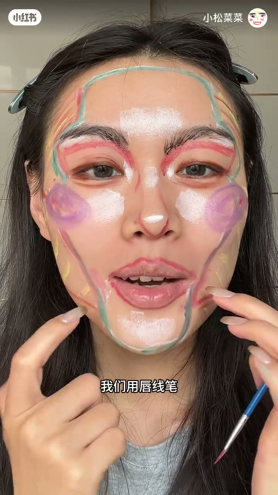
11:42-12:24全妆完成与叠加建议
11:42到这里整个全妆完成。如果想要上镜更好看、效果更明显，可以用粉状修容再叠加一遍眉眼处的高光和阴影，但眉骨处的提亮、眼头和鼻头的横向提亮不能忘。
12:01博主总结：即使没有很多颜色叠加，只通过轮廓的明暗对比，也能化出高级气质的妆容。
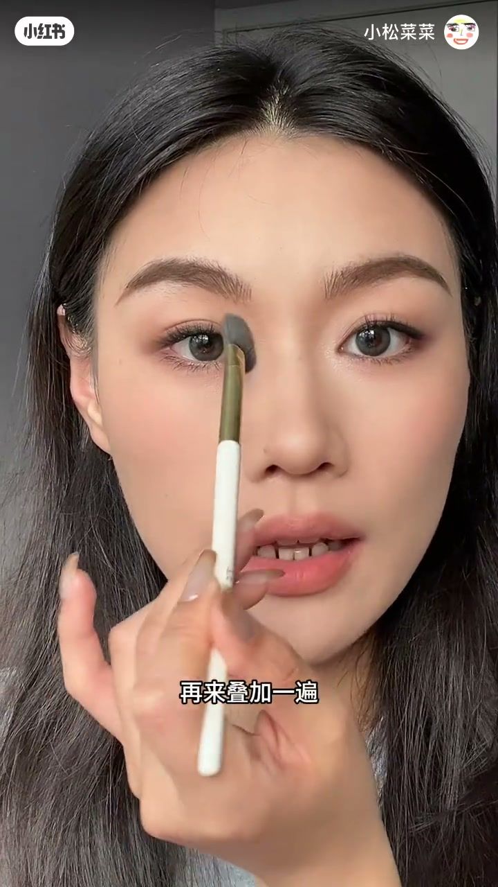